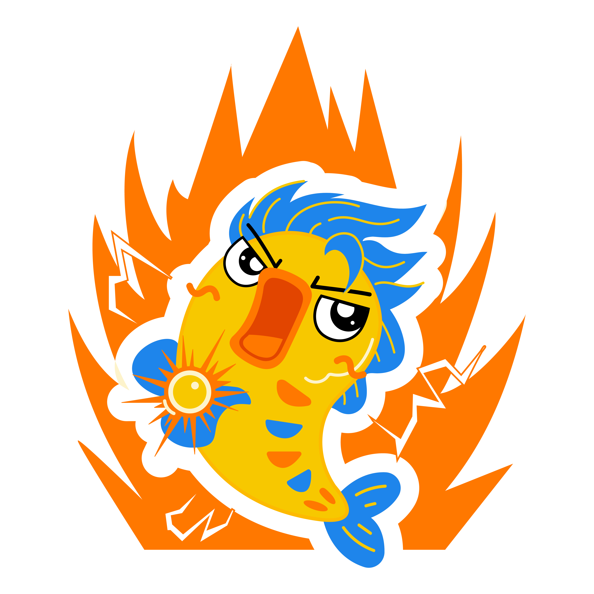

Khóa LD01 → LD40 · Làm đề, sửa đề, xem lại — đầy đủ trong một lớp.

Làm bài tương tác, có chấm điểm tự động.
LD01, LD03, LD05… Làm trực tiếp, chấm liền, xem đáp án ngay sau buổi.
LD02, LD04, LD06… Làm trong tuần, nộp tự động, có nhắc nhở.
Phân theo chuyên đề: Hàm số, Tích phân, Số phức, OXYZ… Làm vừa sức.
Mô hình ứng dụng, đề tham khảo từ tình huống đời sống — kinh tế, vật lí, xây dựng, dịch tễ.
🔜 Sắp ra mắt